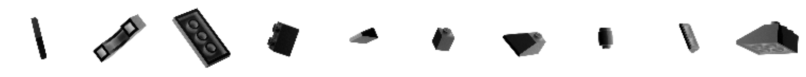

flowchart LR A([Random noise]) --> B[Generator] --> C([Generated image]) D([Image]) --> E[Discriminator] --> F([Prediction of realness probability])
GANs
Notes on Generative Adversarial Networks (GANs).
Story Time
Imagine a forger trying to forge £20 notes and the police trying to stop them.
The police learn to spot the fakes. But then the forger learns to improve their forging skills to make better fakes.
This goes back and forth. With each iteration, the forger keeps getting better but then the police learn to spot these more sophisticated fakes.
The results in a forger (generator) learning to create convincing fakes and the popo (discriminator) learning to spot fakes.
1. GANs
The idea of GANs is that we can train two competing models:
- The generator tries to convert random noise into convincing observations.
- The discriminator tries to predict whether an observation came from the original training dataset or is a “fake”.
We initialise both as random models; the generator outputs noise and the discriminator predicts randomly. We then alternate the training of the two networks so that the generator gets incrementally better at fooling the discriminator, then the discriminator gets incrementally better at spotting fakes.
2. Building a Deep Convolutional GAN (DCGAN)
We will implement a GAN to generate pictures of bricks.
2.1. Load and pre-process the data
Load image data of lego bricks. We will train a model that can generate novel lego brick images.
tanh vs sigmoid activation
The original data is scaled from [0, 255].
Often we will rescale this to [0, 1] so that we can use sigmoid activation functions.
In this case we will scale to [-1, 1] so that we can use tanh activation functions, which tend to give stronger gradients than sigmoid.
from pathlib import Path
import numpy as np
import matplotlib.pyplot as plt
import tensorflow as tf
from tensorflow.keras import (
layers,
models,
callbacks,
losses,
utils,
metrics,
optimizers,
)
def sample_batch(dataset):
batch = dataset.take(1).get_single_element()
if isinstance(batch, tuple):
batch = batch[0]
return batch.numpy()
def display_images(
images, n=10, size=(20, 3), cmap="gray_r", as_type="float32", save_to=None
):
"""Displays n random images from each one of the supplied arrays."""
if images.max() > 1.0:
images = images / 255.0
elif images.min() < 0.0:
images = (images + 1.0) / 2.0
plt.figure(figsize=size)
for i in range(n):
_ = plt.subplot(1, n, i + 1)
plt.imshow(images[i].astype(as_type), cmap=cmap)
plt.axis("off")
if save_to:
plt.savefig(save_to)
print(f"\nSaved to {save_to}")
plt.show()Model and data parameters:
DATA_DIR = Path("/Users/gurpreetjohl/workspace/datasets/lego-brick-images")
IMAGE_SIZE = 64
CHANNELS = 1
BATCH_SIZE = 128
Z_DIM = 100
EPOCHS = 100
LOAD_MODEL = False
ADAM_BETA_1 = 0.5
ADAM_BETA_2 = 0.999
LEARNING_RATE = 0.0002
NOISE_PARAM = 0.1Load and pre-process the training data:
def preprocess(img):
"""Normalize and reshape the images."""
img = (tf.cast(img, "float32") - 127.5) / 127.5
return img
training_data = utils.image_dataset_from_directory(
DATA_DIR / "dataset",
labels=None,
color_mode="grayscale",
image_size=(IMAGE_SIZE, IMAGE_SIZE),
batch_size=BATCH_SIZE,
shuffle=True,
seed=42,
interpolation="bilinear",
)
train = training_data.map(lambda x: preprocess(x))Found 40000 files belonging to 1 classes.Some sample input images:
display_images(sample_batch(train))
2.2. Build the Discriminator
The goal of the discriminator is to predict whether an image is real or fake.
This is a supervised binary classification problem, so we can use CNN architecture with a single output node. We stack Conv2D layers with BatchNormalization, LeakyReLU and Dropout layers sandwiched between.
discriminator_input = layers.Input(shape=(IMAGE_SIZE, IMAGE_SIZE, CHANNELS))
x = layers.Conv2D(64, kernel_size=4, strides=2, padding="same", use_bias=False)(discriminator_input)
x = layers.LeakyReLU(0.2)(x)
x = layers.Dropout(0.3)(x)
x = layers.Conv2D(128, kernel_size=4, strides=2, padding="same", use_bias=False)(x)
x = layers.BatchNormalization(momentum=0.9)(x)
x = layers.LeakyReLU(0.2)(x)
x = layers.Dropout(0.3)(x)
x = layers.Conv2D(256, kernel_size=4, strides=2, padding="same", use_bias=False)(x)
x = layers.BatchNormalization(momentum=0.9)(x)
x = layers.LeakyReLU(0.2)(x)
x = layers.Dropout(0.3)(x)
x = layers.Conv2D(512, kernel_size=4, strides=2, padding="same", use_bias=False)(x)
x = layers.BatchNormalization(momentum=0.9)(x)
x = layers.LeakyReLU(0.2)(x)
x = layers.Dropout(0.3)(x)
x = layers.Conv2D(1, kernel_size=4, strides=1, padding="valid", use_bias=False, activation="sigmoid")(x)
discriminator_output = layers.Flatten()(x) # The shape is already 1x1 so no need for a Dense layer after this
discriminator = models.Model(discriminator_input, discriminator_output)
discriminator.summary()Model: "model_1"
_________________________________________________________________
Layer (type) Output Shape Param #
=================================================================
input_2 (InputLayer) [(None, 64, 64, 1)] 0
conv2d_5 (Conv2D) (None, 32, 32, 64) 1024
leaky_re_lu_4 (LeakyReLU) (None, 32, 32, 64) 0
dropout_4 (Dropout) (None, 32, 32, 64) 0
conv2d_6 (Conv2D) (None, 16, 16, 128) 131072
batch_normalization_3 (Bat (None, 16, 16, 128) 512
chNormalization)
leaky_re_lu_5 (LeakyReLU) (None, 16, 16, 128) 0
dropout_5 (Dropout) (None, 16, 16, 128) 0
conv2d_7 (Conv2D) (None, 8, 8, 256) 524288
batch_normalization_4 (Bat (None, 8, 8, 256) 1024
chNormalization)
leaky_re_lu_6 (LeakyReLU) (None, 8, 8, 256) 0
dropout_6 (Dropout) (None, 8, 8, 256) 0
conv2d_8 (Conv2D) (None, 4, 4, 512) 2097152
batch_normalization_5 (Bat (None, 4, 4, 512) 2048
chNormalization)
leaky_re_lu_7 (LeakyReLU) (None, 4, 4, 512) 0
dropout_7 (Dropout) (None, 4, 4, 512) 0
conv2d_9 (Conv2D) (None, 1, 1, 1) 8192
flatten_1 (Flatten) (None, 1) 0
=================================================================
Total params: 2765312 (10.55 MB)
Trainable params: 2763520 (10.54 MB)
Non-trainable params: 1792 (7.00 KB)
_________________________________________________________________2.3. Build the Generator
The purpose of the generator is to turn random noise into convincing images.
The input is a vector sampled from a multivariate Normal distribution, and the output is an image of the same size as the training data.
The discriminator-generator relationship in a GAN is similar to that of the encoder-decoder relations in a VAE.
The architecture of the discriminator is similar to the discriminator but in reverse (like a decoder). We pass stack Conv2DTranspose layers with BatchNormalization and LeakyReLU layers sandwiched in between.
Conv2DTranspose
We use Conv2DTranspose layers to scale the image size up.
An alternative would be to use stacks of Upsampling2D and Conv2D layers, i.e. the following serves the same purpose as a Conv2DTranspose layer:
x = layers.Upsampling2D(size=2)(x)
x = layers.Conv2D(256, kernel_size=4, strides=1, padding="same")(x)The Upsampling2D layer simply repeats each row and column to double its size, then Conv2D applies a convolution.
The idea is similar with Conv2DTranspose, but the extra rows and columns are filled with zeros rather than repeated existing values.
Conv2DTranspose layers can result in checkerboard pattern artifacts. Both options are used in practice, so it is often helpful to experiment and see which gives better results.
generator_input = layers.Input(shape=(Z_DIM,))
x = layers.Reshape((1, 1, Z_DIM))(generator_input) # Reshape the input vector so we can apply conv transpose operations to it
x = layers.Conv2DTranspose(512, kernel_size=4, strides=1, padding="valid", use_bias=False)(x)
x = layers.BatchNormalization(momentum=0.9)(x)
x = layers.LeakyReLU(0.2)(x)
x = layers.Conv2DTranspose(256, kernel_size=4, strides=2, padding="same", use_bias=False)(x)
x = layers.BatchNormalization(momentum=0.9)(x)
x = layers.LeakyReLU(0.2)(x)
x = layers.Conv2DTranspose(128, kernel_size=4, strides=2, padding="same", use_bias=False)(x)
x = layers.BatchNormalization(momentum=0.9)(x)
x = layers.LeakyReLU(0.2)(x)
x = layers.Conv2DTranspose(64, kernel_size=4, strides=2, padding="same", use_bias=False)(x)
x = layers.BatchNormalization(momentum=0.9)(x)
x = layers.LeakyReLU(0.2)(x)
generator_output = layers.Conv2DTranspose(
CHANNELS,
kernel_size=4,
strides=2,
padding="same",
use_bias=False,
activation="tanh",
)(x)
generator = models.Model(generator_input, generator_output)
generator.summary()Model: "model_2"
_________________________________________________________________
Layer (type) Output Shape Param #
=================================================================
input_3 (InputLayer) [(None, 100)] 0
reshape (Reshape) (None, 1, 1, 100) 0
conv2d_transpose (Conv2DTr (None, 4, 4, 512) 819200
anspose)
batch_normalization_6 (Bat (None, 4, 4, 512) 2048
chNormalization)
leaky_re_lu_8 (LeakyReLU) (None, 4, 4, 512) 0
conv2d_transpose_1 (Conv2D (None, 8, 8, 256) 2097152
Transpose)
batch_normalization_7 (Bat (None, 8, 8, 256) 1024
chNormalization)
leaky_re_lu_9 (LeakyReLU) (None, 8, 8, 256) 0
conv2d_transpose_2 (Conv2D (None, 16, 16, 128) 524288
Transpose)
batch_normalization_8 (Bat (None, 16, 16, 128) 512
chNormalization)
leaky_re_lu_10 (LeakyReLU) (None, 16, 16, 128) 0
conv2d_transpose_3 (Conv2D (None, 32, 32, 64) 131072
Transpose)
batch_normalization_9 (Bat (None, 32, 32, 64) 256
chNormalization)
leaky_re_lu_11 (LeakyReLU) (None, 32, 32, 64) 0
conv2d_transpose_4 (Conv2D (None, 64, 64, 1) 1024
Transpose)
=================================================================
Total params: 3576576 (13.64 MB)
Trainable params: 3574656 (13.64 MB)
Non-trainable params: 1920 (7.50 KB)
_________________________________________________________________2.4. Train the GAN
We alternate between training the discriminator and generator. They are not trained simultaneously. We want the generated images to be predicted close to 1 because the generator is good, not because the discriminator is weak.
For the discriminator, we create a training set where some images are real images from the training data and some are outputs from the generator. This is then a supervised binary classification problem.
For the generator, we want a way of scoring each generated image on its realness so that we can optimise this. The discriminator provides exactly this. We pass the generated images through the discriminator to get probabilities. The generator wants to fool the discriminator, so ideally this would be a vector of 1s. So the loss function is the binary crossentropy between these probabilities and a vector of 1s.
class DCGAN(models.Model):
def __init__(self, discriminator, generator, latent_dim):
super(DCGAN, self).__init__()
self.discriminator = discriminator
self.generator = generator
self.latent_dim = latent_dim
def compile(self, d_optimizer, g_optimizer):
super(DCGAN, self).compile()
self.loss_fn = losses.BinaryCrossentropy()
self.d_optimizer = d_optimizer
self.g_optimizer = g_optimizer
self.d_loss_metric = metrics.Mean(name="d_loss")
self.d_real_acc_metric = metrics.BinaryAccuracy(name="d_real_acc")
self.d_fake_acc_metric = metrics.BinaryAccuracy(name="d_fake_acc")
self.d_acc_metric = metrics.BinaryAccuracy(name="d_acc")
self.g_loss_metric = metrics.Mean(name="g_loss")
self.g_acc_metric = metrics.BinaryAccuracy(name="g_acc")
@property
def metrics(self):
return [
self.d_loss_metric,
self.d_real_acc_metric,
self.d_fake_acc_metric,
self.d_acc_metric,
self.g_loss_metric,
self.g_acc_metric,
]
def train_step(self, real_images):
# Sample random points in the latent space
batch_size = tf.shape(real_images)[0]
random_latent_vectors = tf.random.normal(
shape=(batch_size, self.latent_dim)
)
# Train the discriminator on fake images
with tf.GradientTape() as gen_tape, tf.GradientTape() as disc_tape:
generated_images = self.generator(
random_latent_vectors, training=True
)
# Evaluate the discriminator on the real and fake images
real_predictions = self.discriminator(real_images, training=True)
fake_predictions = self.discriminator(generated_images, training=True)
real_labels = tf.ones_like(real_predictions)
real_noisy_labels = real_labels + NOISE_PARAM * tf.random.uniform(
tf.shape(real_predictions)
)
fake_labels = tf.zeros_like(fake_predictions)
fake_noisy_labels = fake_labels - NOISE_PARAM * tf.random.uniform(
tf.shape(fake_predictions)
)
# Calculate the losses
d_real_loss = self.loss_fn(real_noisy_labels, real_predictions)
d_fake_loss = self.loss_fn(fake_noisy_labels, fake_predictions)
d_loss = (d_real_loss + d_fake_loss) / 2.0
g_loss = self.loss_fn(real_labels, fake_predictions)
# Update gradients
gradients_of_discriminator = disc_tape.gradient(
d_loss, self.discriminator.trainable_variables
)
gradients_of_generator = gen_tape.gradient(
g_loss, self.generator.trainable_variables
)
self.d_optimizer.apply_gradients(
zip(gradients_of_discriminator, discriminator.trainable_variables)
)
self.g_optimizer.apply_gradients(
zip(gradients_of_generator, generator.trainable_variables)
)
# Update metrics
self.d_loss_metric.update_state(d_loss)
self.d_real_acc_metric.update_state(real_labels, real_predictions)
self.d_fake_acc_metric.update_state(fake_labels, fake_predictions)
self.d_acc_metric.update_state(
[real_labels, fake_labels], [real_predictions, fake_predictions]
)
self.g_loss_metric.update_state(g_loss)
self.g_acc_metric.update_state(real_labels, fake_predictions)
return {m.name: m.result() for m in self.metrics}# Create a DCGAN
dcgan = DCGAN(
discriminator=discriminator, generator=generator, latent_dim=Z_DIM
)dcgan.compile(
d_optimizer=optimizers.legacy.Adam(
learning_rate=LEARNING_RATE, beta_1=ADAM_BETA_1, beta_2=ADAM_BETA_2
),
g_optimizer=optimizers.legacy.Adam(
learning_rate=LEARNING_RATE, beta_1=ADAM_BETA_1, beta_2=ADAM_BETA_2
),
)
dcgan.fit(train, epochs=EPOCHS)Epoch 1/100
313/313 [==============================] - 459s 1s/step - d_loss: 0.0252 - d_real_acc: 0.9011 - d_fake_acc: 0.9013 - d_acc: 0.9012 - g_loss: 5.3464 - g_acc: 0.0987
Epoch 2/100
313/313 [==============================] - 459s 1s/step - d_loss: 0.0454 - d_real_acc: 0.8986 - d_fake_acc: 0.8997 - d_acc: 0.8992 - g_loss: 5.2642 - g_acc: 0.1002
Epoch 3/100
313/313 [==============================] - 458s 1s/step - d_loss: 0.0556 - d_real_acc: 0.8958 - d_fake_acc: 0.8975 - d_acc: 0.8967 - g_loss: 4.9679 - g_acc: 0.1025
Epoch 4/100
313/313 [==============================] - 467s 1s/step - d_loss: 0.0246 - d_real_acc: 0.9065 - d_fake_acc: 0.9091 - d_acc: 0.9078 - g_loss: 5.1611 - g_acc: 0.0909
Epoch 5/100
313/313 [==============================] - 470s 1s/step - d_loss: 0.0178 - d_real_acc: 0.9067 - d_fake_acc: 0.9088 - d_acc: 0.9078 - g_loss: 5.1731 - g_acc: 0.0912
Epoch 6/100
313/313 [==============================] - 463s 1s/step - d_loss: 0.0314 - d_real_acc: 0.9116 - d_fake_acc: 0.9105 - d_acc: 0.9110 - g_loss: 5.2774 - g_acc: 0.0895
Epoch 7/100
313/313 [==============================] - 559s 2s/step - d_loss: 0.0229 - d_real_acc: 0.9085 - d_fake_acc: 0.9079 - d_acc: 0.9082 - g_loss: 5.3445 - g_acc: 0.0921
Epoch 8/100
313/313 [==============================] - 467s 1s/step - d_loss: -0.0155 - d_real_acc: 0.9161 - d_fake_acc: 0.9161 - d_acc: 0.9161 - g_loss: 5.7091 - g_acc: 0.0839
Epoch 9/100
313/313 [==============================] - 438s 1s/step - d_loss: -0.0077 - d_real_acc: 0.9220 - d_fake_acc: 0.9224 - d_acc: 0.9222 - g_loss: 5.8731 - g_acc: 0.0776
Epoch 10/100
313/313 [==============================] - 468s 1s/step - d_loss: -0.0472 - d_real_acc: 0.9228 - d_fake_acc: 0.9241 - d_acc: 0.9234 - g_loss: 5.9693 - g_acc: 0.0759
Epoch 11/100
313/313 [==============================] - 430s 1s/step - d_loss: -0.0839 - d_real_acc: 0.9404 - d_fake_acc: 0.9424 - d_acc: 0.9414 - g_loss: 6.1212 - g_acc: 0.0576
Epoch 12/100
313/313 [==============================] - 457s 1s/step - d_loss: 0.0431 - d_real_acc: 0.9053 - d_fake_acc: 0.9046 - d_acc: 0.9049 - g_loss: 6.0708 - g_acc: 0.0954
Epoch 13/100
313/313 [==============================] - 448s 1s/step - d_loss: -0.0154 - d_real_acc: 0.9236 - d_fake_acc: 0.9244 - d_acc: 0.9240 - g_loss: 6.3106 - g_acc: 0.0756
Epoch 14/100
313/313 [==============================] - 432s 1s/step - d_loss: -0.0720 - d_real_acc: 0.9320 - d_fake_acc: 0.9342 - d_acc: 0.9331 - g_loss: 6.6509 - g_acc: 0.0658
Epoch 15/100
313/313 [==============================] - 443s 1s/step - d_loss: 0.0057 - d_real_acc: 0.9072 - d_fake_acc: 0.9097 - d_acc: 0.9085 - g_loss: 6.1399 - g_acc: 0.0903
Epoch 16/100
313/313 [==============================] - 427s 1s/step - d_loss: 0.0069 - d_real_acc: 0.9185 - d_fake_acc: 0.9167 - d_acc: 0.9176 - g_loss: 6.3255 - g_acc: 0.0833
Epoch 17/100
313/313 [==============================] - 439s 1s/step - d_loss: -0.0709 - d_real_acc: 0.9220 - d_fake_acc: 0.9239 - d_acc: 0.9230 - g_loss: 6.8108 - g_acc: 0.0761
Epoch 18/100
313/313 [==============================] - 437s 1s/step - d_loss: 0.0373 - d_real_acc: 0.9288 - d_fake_acc: 0.9512 - d_acc: 0.9400 - g_loss: 8.1066 - g_acc: 0.0488
Epoch 19/100
313/313 [==============================] - 1029s 3s/step - d_loss: -0.1154 - d_real_acc: 0.9408 - d_fake_acc: 0.9420 - d_acc: 0.9414 - g_loss: 7.6274 - g_acc: 0.0580
Epoch 20/100
313/313 [==============================] - 5781s 19s/step - d_loss: -0.0431 - d_real_acc: 0.9222 - d_fake_acc: 0.9231 - d_acc: 0.9227 - g_loss: 7.1953 - g_acc: 0.0769
Epoch 21/100
313/313 [==============================] - 2696s 9s/step - d_loss: -0.0542 - d_real_acc: 0.9176 - d_fake_acc: 0.9205 - d_acc: 0.9191 - g_loss: 7.1675 - g_acc: 0.0794
Epoch 22/100
313/313 [==============================] - 1481s 5s/step - d_loss: -0.1424 - d_real_acc: 0.9398 - d_fake_acc: 0.9400 - d_acc: 0.9399 - g_loss: 7.7399 - g_acc: 0.0600
Epoch 23/100
313/313 [==============================] - 439s 1s/step - d_loss: -0.0263 - d_real_acc: 0.9154 - d_fake_acc: 0.9148 - d_acc: 0.9151 - g_loss: 7.3322 - g_acc: 0.0852
Epoch 24/100
313/313 [==============================] - 443s 1s/step - d_loss: -0.1420 - d_real_acc: 0.9406 - d_fake_acc: 0.9430 - d_acc: 0.9418 - g_loss: 8.1502 - g_acc: 0.0570
Epoch 25/100
313/313 [==============================] - 475s 2s/step - d_loss: -0.1650 - d_real_acc: 0.9393 - d_fake_acc: 0.9395 - d_acc: 0.9394 - g_loss: 7.9602 - g_acc: 0.0605
Epoch 26/100
313/313 [==============================] - 447s 1s/step - d_loss: -0.1247 - d_real_acc: 0.9419 - d_fake_acc: 0.9437 - d_acc: 0.9428 - g_loss: 7.7939 - g_acc: 0.0563
Epoch 27/100
313/313 [==============================] - 1356s 4s/step - d_loss: -0.0182 - d_real_acc: 0.9160 - d_fake_acc: 0.9212 - d_acc: 0.9186 - g_loss: 6.9180 - g_acc: 0.0787
Epoch 28/100
313/313 [==============================] - 2219s 7s/step - d_loss: -0.2227 - d_real_acc: 0.9511 - d_fake_acc: 0.9519 - d_acc: 0.9515 - g_loss: 8.1970 - g_acc: 0.0481
Epoch 29/100
313/313 [==============================] - 5807s 19s/step - d_loss: -0.1091 - d_real_acc: 0.9318 - d_fake_acc: 0.9320 - d_acc: 0.9319 - g_loss: 7.5829 - g_acc: 0.0680
Epoch 30/100
313/313 [==============================] - 2511s 8s/step - d_loss: -0.3131 - d_real_acc: 0.9571 - d_fake_acc: 0.9604 - d_acc: 0.9588 - g_loss: 9.8839 - g_acc: 0.0395
Epoch 31/100
313/313 [==============================] - 2768s 9s/step - d_loss: -0.0996 - d_real_acc: 0.9269 - d_fake_acc: 0.9286 - d_acc: 0.9277 - g_loss: 8.3337 - g_acc: 0.0714
Epoch 32/100
313/313 [==============================] - 3046s 10s/step - d_loss: -0.1619 - d_real_acc: 0.9423 - d_fake_acc: 0.9482 - d_acc: 0.9453 - g_loss: 8.2435 - g_acc: 0.0518
Epoch 33/100
313/313 [==============================] - 3478s 11s/step - d_loss: -0.1182 - d_real_acc: 0.9284 - d_fake_acc: 0.9304 - d_acc: 0.9294 - g_loss: 8.1681 - g_acc: 0.0696
Epoch 34/100
313/313 [==============================] - 2776s 9s/step - d_loss: -0.2214 - d_real_acc: 0.9459 - d_fake_acc: 0.9582 - d_acc: 0.9520 - g_loss: 9.9168 - g_acc: 0.0417
Epoch 35/100
313/313 [==============================] - 2724s 9s/step - d_loss: -0.3101 - d_real_acc: 0.9421 - d_fake_acc: 0.9293 - d_acc: 0.9357 - g_loss: 13.2857 - g_acc: 0.0707
Epoch 36/100
313/313 [==============================] - 2648s 8s/step - d_loss: -0.0441 - d_real_acc: 0.8963 - d_fake_acc: 0.8961 - d_acc: 0.8962 - g_loss: 7.5664 - g_acc: 0.1038
Epoch 37/100
313/313 [==============================] - 3262s 10s/step - d_loss: -0.0859 - d_real_acc: 0.9314 - d_fake_acc: 0.9402 - d_acc: 0.9358 - g_loss: 8.3591 - g_acc: 0.0598
Epoch 38/100
313/313 [==============================] - 2612s 8s/step - d_loss: -0.2979 - d_real_acc: 0.9554 - d_fake_acc: 0.9577 - d_acc: 0.9566 - g_loss: 9.2534 - g_acc: 0.0423
Epoch 39/100
313/313 [==============================] - 2235s 7s/step - d_loss: -0.3387 - d_real_acc: 0.9607 - d_fake_acc: 0.9622 - d_acc: 0.9615 - g_loss: 9.9397 - g_acc: 0.0378
Epoch 40/100
313/313 [==============================] - 3453s 11s/step - d_loss: -0.1056 - d_real_acc: 0.9279 - d_fake_acc: 0.9310 - d_acc: 0.9294 - g_loss: 8.9394 - g_acc: 0.0690
Epoch 41/100
313/313 [==============================] - 2316s 7s/step - d_loss: -0.2147 - d_real_acc: 0.9318 - d_fake_acc: 0.9327 - d_acc: 0.9323 - g_loss: 9.0337 - g_acc: 0.0673
Epoch 42/100
313/313 [==============================] - 3134s 10s/step - d_loss: -0.2554 - d_real_acc: 0.9511 - d_fake_acc: 0.9540 - d_acc: 0.9526 - g_loss: 9.5571 - g_acc: 0.0460
Epoch 43/100
313/313 [==============================] - 3933s 13s/step - d_loss: -0.2871 - d_real_acc: 0.9490 - d_fake_acc: 0.9526 - d_acc: 0.9508 - g_loss: 10.3316 - g_acc: 0.0474
Epoch 44/100
313/313 [==============================] - 3248s 10s/step - d_loss: -0.3456 - d_real_acc: 0.9635 - d_fake_acc: 0.9635 - d_acc: 0.9635 - g_loss: 9.8675 - g_acc: 0.0364
Epoch 45/100
313/313 [==============================] - 3043s 10s/step - d_loss: -0.3274 - d_real_acc: 0.9603 - d_fake_acc: 0.9618 - d_acc: 0.9610 - g_loss: 10.4185 - g_acc: 0.0382
Epoch 46/100
313/313 [==============================] - 2706s 9s/step - d_loss: -0.6160 - d_real_acc: 0.9902 - d_fake_acc: 0.9908 - d_acc: 0.9905 - g_loss: 13.0574 - g_acc: 0.0092
Epoch 47/100
313/313 [==============================] - 2453s 8s/step - d_loss: 0.3413 - d_real_acc: 0.8073 - d_fake_acc: 0.8054 - d_acc: 0.8064 - g_loss: 6.5391 - g_acc: 0.1946
Epoch 48/100
313/313 [==============================] - 2898s 9s/step - d_loss: -0.4416 - d_real_acc: 0.9764 - d_fake_acc: 0.9784 - d_acc: 0.9774 - g_loss: 10.8318 - g_acc: 0.0216
Epoch 49/100
313/313 [==============================] - 3358s 11s/step - d_loss: 6.8776 - d_real_acc: 0.1058 - d_fake_acc: 0.9910 - d_acc: 0.5484 - g_loss: 14.8921 - g_acc: 0.0090
Epoch 50/100
313/313 [==============================] - 2940s 9s/step - d_loss: 7.7113 - d_real_acc: 0.0000e+00 - d_fake_acc: 1.0000 - d_acc: 0.5000 - g_loss: 15.4250 - g_acc: 0.0000e+00
Epoch 51/100
313/313 [==============================] - 2983s 10s/step - d_loss: 7.7121 - d_real_acc: 0.0000e+00 - d_fake_acc: 1.0000 - d_acc: 0.5000 - g_loss: 15.4250 - g_acc: 0.0000e+00
Epoch 52/100
313/313 [==============================] - 3458s 11s/step - d_loss: 7.7149 - d_real_acc: 0.0000e+00 - d_fake_acc: 1.0000 - d_acc: 0.5000 - g_loss: 15.4250 - g_acc: 0.0000e+00
Epoch 53/100
313/313 [==============================] - 2404s 8s/step - d_loss: 4.4950 - d_real_acc: 0.3543 - d_fake_acc: 0.8865 - d_acc: 0.6204 - g_loss: 10.6772 - g_acc: 0.1135
Epoch 54/100
313/313 [==============================] - 3297s 11s/step - d_loss: -0.0132 - d_real_acc: 0.9068 - d_fake_acc: 0.9010 - d_acc: 0.9039 - g_loss: 7.9660 - g_acc: 0.0990
Epoch 55/100
313/313 [==============================] - 2486s 8s/step - d_loss: -0.3508 - d_real_acc: 0.9615 - d_fake_acc: 0.9612 - d_acc: 0.9614 - g_loss: 10.2242 - g_acc: 0.0388
Epoch 56/100
313/313 [==============================] - 2995s 10s/step - d_loss: -0.3125 - d_real_acc: 0.9525 - d_fake_acc: 0.9533 - d_acc: 0.9529 - g_loss: 10.4182 - g_acc: 0.0467
Epoch 57/100
313/313 [==============================] - 1791s 6s/step - d_loss: -0.3201 - d_real_acc: 0.9532 - d_fake_acc: 0.9560 - d_acc: 0.9546 - g_loss: 10.4752 - g_acc: 0.0441
Epoch 58/100
313/313 [==============================] - 2792s 9s/step - d_loss: -0.2649 - d_real_acc: 0.9509 - d_fake_acc: 0.9532 - d_acc: 0.9520 - g_loss: 9.3587 - g_acc: 0.0468
Epoch 59/100
313/313 [==============================] - 3665s 12s/step - d_loss: -0.1747 - d_real_acc: 0.9413 - d_fake_acc: 0.9584 - d_acc: 0.9499 - g_loss: 10.1369 - g_acc: 0.0416
Epoch 60/100
313/313 [==============================] - 2493s 8s/step - d_loss: -0.2692 - d_real_acc: 0.9499 - d_fake_acc: 0.9534 - d_acc: 0.9517 - g_loss: 9.7124 - g_acc: 0.0466
Epoch 61/100
313/313 [==============================] - 2293s 7s/step - d_loss: -0.2869 - d_real_acc: 0.9520 - d_fake_acc: 0.9556 - d_acc: 0.9538 - g_loss: 10.2684 - g_acc: 0.0444
Epoch 62/100
313/313 [==============================] - 2865s 9s/step - d_loss: -0.6188 - d_real_acc: 0.9900 - d_fake_acc: 0.9901 - d_acc: 0.9901 - g_loss: 12.9584 - g_acc: 0.0099
Epoch 63/100
313/313 [==============================] - 2301s 7s/step - d_loss: -0.7197 - d_real_acc: 0.9984 - d_fake_acc: 0.9985 - d_acc: 0.9985 - g_loss: 14.5762 - g_acc: 0.0015
Epoch 64/100
313/313 [==============================] - 2404s 8s/step - d_loss: -0.4320 - d_real_acc: 0.9665 - d_fake_acc: 0.9702 - d_acc: 0.9683 - g_loss: 12.0177 - g_acc: 0.0298
Epoch 65/100
313/313 [==============================] - 4723s 15s/step - d_loss: 6.7591 - d_real_acc: 0.9940 - d_fake_acc: 0.1077 - d_acc: 0.5509 - g_loss: 1.4402 - g_acc: 0.8923
Epoch 66/100
313/313 [==============================] - 2726s 9s/step - d_loss: 7.6259 - d_real_acc: 1.0000 - d_fake_acc: 0.0000e+00 - d_acc: 0.5000 - g_loss: 0.0000e+00 - g_acc: 1.0000
Epoch 67/100
313/313 [==============================] - 3325s 11s/step - d_loss: 7.6250 - d_real_acc: 1.0000 - d_fake_acc: 0.0000e+00 - d_acc: 0.5000 - g_loss: 0.0000e+00 - g_acc: 1.0000
Epoch 68/100
313/313 [==============================] - 2513s 8s/step - d_loss: 7.6251 - d_real_acc: 1.0000 - d_fake_acc: 0.0000e+00 - d_acc: 0.5000 - g_loss: 7.4387e-12 - g_acc: 1.0000
Epoch 69/100
313/313 [==============================] - 3304s 11s/step - d_loss: 3.4076 - d_real_acc: 0.8552 - d_fake_acc: 0.5472 - d_acc: 0.7012 - g_loss: 5.2072 - g_acc: 0.4528
Epoch 70/100
313/313 [==============================] - 2276s 7s/step - d_loss: -0.2424 - d_real_acc: 0.9448 - d_fake_acc: 0.9581 - d_acc: 0.9514 - g_loss: 10.5206 - g_acc: 0.0419
Epoch 71/100
313/313 [==============================] - 3315s 11s/step - d_loss: -0.3093 - d_real_acc: 0.9563 - d_fake_acc: 0.9640 - d_acc: 0.9602 - g_loss: 10.6076 - g_acc: 0.0360
Epoch 72/100
313/313 [==============================] - 2306s 7s/step - d_loss: -0.2440 - d_real_acc: 0.9466 - d_fake_acc: 0.9581 - d_acc: 0.9523 - g_loss: 10.1996 - g_acc: 0.0419
Epoch 73/100
313/313 [==============================] - 3218s 10s/step - d_loss: -0.7206 - d_real_acc: 0.9985 - d_fake_acc: 0.9983 - d_acc: 0.9984 - g_loss: 14.6350 - g_acc: 0.0017
Epoch 74/100
313/313 [==============================] - 3258s 10s/step - d_loss: -0.6281 - d_real_acc: 0.9828 - d_fake_acc: 0.9841 - d_acc: 0.9834 - g_loss: 14.5219 - g_acc: 0.0159
Epoch 75/100
313/313 [==============================] - 2874s 9s/step - d_loss: -0.0555 - d_real_acc: 0.9254 - d_fake_acc: 0.9371 - d_acc: 0.9312 - g_loss: 9.3443 - g_acc: 0.0629
Epoch 76/100
313/313 [==============================] - 2559s 8s/step - d_loss: -0.2825 - d_real_acc: 0.9515 - d_fake_acc: 0.9611 - d_acc: 0.9563 - g_loss: 10.7583 - g_acc: 0.0388
Epoch 77/100
313/313 [==============================] - 3663s 12s/step - d_loss: -0.3945 - d_real_acc: 0.9667 - d_fake_acc: 0.9691 - d_acc: 0.9679 - g_loss: 10.8566 - g_acc: 0.0309
Epoch 78/100
313/313 [==============================] - 2314s 7s/step - d_loss: -0.3953 - d_real_acc: 0.9508 - d_fake_acc: 0.9529 - d_acc: 0.9519 - g_loss: 12.0037 - g_acc: 0.0471
Epoch 79/100
313/313 [==============================] - 2816s 9s/step - d_loss: -0.6059 - d_real_acc: 0.9841 - d_fake_acc: 0.9838 - d_acc: 0.9840 - g_loss: 13.3516 - g_acc: 0.0162
Epoch 80/100
313/313 [==============================] - 3232s 10s/step - d_loss: -0.3555 - d_real_acc: 0.9587 - d_fake_acc: 0.9649 - d_acc: 0.9618 - g_loss: 11.2453 - g_acc: 0.0351
Epoch 81/100
313/313 [==============================] - 3705s 12s/step - d_loss: -0.4501 - d_real_acc: 0.9731 - d_fake_acc: 0.9743 - d_acc: 0.9737 - g_loss: 11.4553 - g_acc: 0.0258
Epoch 82/100
313/313 [==============================] - 2364s 8s/step - d_loss: -0.3827 - d_real_acc: 0.9588 - d_fake_acc: 0.9639 - d_acc: 0.9613 - g_loss: 11.6275 - g_acc: 0.0361
Epoch 83/100
313/313 [==============================] - 1122s 4s/step - d_loss: -0.4355 - d_real_acc: 0.9642 - d_fake_acc: 0.9674 - d_acc: 0.9658 - g_loss: 12.1025 - g_acc: 0.0326
Epoch 84/100
313/313 [==============================] - 4065s 13s/step - d_loss: -0.4456 - d_real_acc: 0.9695 - d_fake_acc: 0.9714 - d_acc: 0.9704 - g_loss: 11.6065 - g_acc: 0.0287
Epoch 85/100
313/313 [==============================] - 4461s 14s/step - d_loss: -0.6405 - d_real_acc: 0.9901 - d_fake_acc: 0.9899 - d_acc: 0.9900 - g_loss: 13.4694 - g_acc: 0.0101
Epoch 86/100
313/313 [==============================] - 2630s 8s/step - d_loss: -0.6431 - d_real_acc: 0.9857 - d_fake_acc: 0.9856 - d_acc: 0.9857 - g_loss: 14.3623 - g_acc: 0.0144
Epoch 87/100
313/313 [==============================] - 2567s 8s/step - d_loss: -0.3870 - d_real_acc: 0.9534 - d_fake_acc: 0.9578 - d_acc: 0.9556 - g_loss: 12.0201 - g_acc: 0.0422
Epoch 88/100
313/313 [==============================] - 2597s 8s/step - d_loss: -0.7624 - d_real_acc: 0.9999 - d_fake_acc: 0.9998 - d_acc: 0.9998 - g_loss: 15.3547 - g_acc: 2.5000e-04
Epoch 89/100
313/313 [==============================] - 1477s 5s/step - d_loss: -0.5787 - d_real_acc: 0.9764 - d_fake_acc: 0.9759 - d_acc: 0.9762 - g_loss: 13.8500 - g_acc: 0.0241
Epoch 90/100
313/313 [==============================] - 522s 2s/step - d_loss: -0.6747 - d_real_acc: 0.9885 - d_fake_acc: 0.9897 - d_acc: 0.9891 - g_loss: 14.5329 - g_acc: 0.0104
Epoch 91/100
313/313 [==============================] - 512s 2s/step - d_loss: 6.4703 - d_real_acc: 0.9892 - d_fake_acc: 0.1438 - d_acc: 0.5665 - g_loss: 2.1184 - g_acc: 0.8562
Epoch 92/100
313/313 [==============================] - 514s 2s/step - d_loss: 7.6245 - d_real_acc: 1.0000 - d_fake_acc: 0.0000e+00 - d_acc: 0.5000 - g_loss: 0.0000e+00 - g_acc: 1.0000
Epoch 93/100
313/313 [==============================] - 533s 2s/step - d_loss: 7.6249 - d_real_acc: 1.0000 - d_fake_acc: 0.0000e+00 - d_acc: 0.5000 - g_loss: 0.0000e+00 - g_acc: 1.0000
Epoch 94/100
313/313 [==============================] - 499s 2s/step - d_loss: 7.6236 - d_real_acc: 1.0000 - d_fake_acc: 0.0000e+00 - d_acc: 0.5000 - g_loss: 0.0000e+00 - g_acc: 1.0000
Epoch 95/100
313/313 [==============================] - 483s 2s/step - d_loss: 7.6240 - d_real_acc: 1.0000 - d_fake_acc: 0.0000e+00 - d_acc: 0.5000 - g_loss: 0.0000e+00 - g_acc: 1.0000
Epoch 96/100
313/313 [==============================] - 481s 2s/step - d_loss: 7.6248 - d_real_acc: 1.0000 - d_fake_acc: 0.0000e+00 - d_acc: 0.5000 - g_loss: 0.0000e+00 - g_acc: 1.0000
Epoch 97/100
313/313 [==============================] - 488s 2s/step - d_loss: 7.6247 - d_real_acc: 1.0000 - d_fake_acc: 0.0000e+00 - d_acc: 0.5000 - g_loss: 0.0000e+00 - g_acc: 1.0000
Epoch 98/100
313/313 [==============================] - 481s 2s/step - d_loss: 7.6263 - d_real_acc: 1.0000 - d_fake_acc: 0.0000e+00 - d_acc: 0.5000 - g_loss: 0.0000e+00 - g_acc: 1.0000
Epoch 99/100
313/313 [==============================] - 459s 1s/step - d_loss: 7.6235 - d_real_acc: 1.0000 - d_fake_acc: 0.0000e+00 - d_acc: 0.5000 - g_loss: 0.0000e+00 - g_acc: 1.0000
Epoch 100/100
313/313 [==============================] - 4669s 15s/step - d_loss: 7.6231 - d_real_acc: 1.0000 - d_fake_acc: 0.0000e+00 - d_acc: 0.5000 - g_loss: 0.0000e+00 - g_acc: 1.0000<keras.src.callbacks.History at 0x10f686690># Save the final models
generator.save("./models/generator")
discriminator.save("./models/discriminator")WARNING:tensorflow:Compiled the loaded model, but the compiled metrics have yet to be built. `model.compile_metrics` will be empty until you train or evaluate the model.
INFO:tensorflow:Assets written to: ./models/generator/assets
WARNING:tensorflow:Compiled the loaded model, but the compiled metrics have yet to be built. `model.compile_metrics` will be empty until you train or evaluate the model.
INFO:tensorflow:Assets written to: ./models/discriminator/assetsWARNING:tensorflow:Compiled the loaded model, but the compiled metrics have yet to be built. `model.compile_metrics` will be empty until you train or evaluate the model.
INFO:tensorflow:Assets written to: ./models/generator/assets
WARNING:tensorflow:Compiled the loaded model, but the compiled metrics have yet to be built. `model.compile_metrics` will be empty until you train or evaluate the model.
INFO:tensorflow:Assets written to: ./models/discriminator/assets3. Analysing the GAN
We can see some examples of images produced by the GAN.
(I don’t have a GPU so training is slow and I only trained 100 epochs… they’re a bit crap)
# Sample some points in the latent space, from the standard normal distribution
grid_width, grid_height = (10, 3)
z_sample = np.random.normal(size=(grid_width * grid_height, Z_DIM))
# Decode the sampled points
reconstructions = generator.predict(z_sample)
# Draw a plot of decoded images
fig = plt.figure(figsize=(18, 5))
fig.subplots_adjust(hspace=0.4, wspace=0.4)
# Output the grid of faces
for i in range(grid_width * grid_height):
ax = fig.add_subplot(grid_height, grid_width, i + 1)
ax.axis("off")
ax.imshow(reconstructions[i, :, :], cmap="Greys")We also want to make sure a generative model doesn’t simply recreate images that are already in the training set.
As a sanity check, we plot some generated images and the closest training images (using the L1 distance). This confirms that the generator is able to understand high-level features, even though we didn’t provide anything other than raw pixels, and it can generate examples distinct from those encountered before.
def compare_images(img1, img2):
return np.mean(np.abs(img1 - img2))
all_data = []
for i in train.as_numpy_iterator():
all_data.extend(i)
all_data = np.array(all_data)
# Plot the images
r, c = 3, 5
fig, axs = plt.subplots(r, c, figsize=(10, 6))
fig.suptitle("Generated images", fontsize=20)
noise = np.random.normal(size=(r * c, Z_DIM))
gen_imgs = generator.predict(noise)
cnt = 0
for i in range(r):
for j in range(c):
axs[i, j].imshow(gen_imgs[cnt], cmap="gray_r")
axs[i, j].axis("off")
cnt += 1
plt.show()1/1 [==============================] - 0s 80ms/stepfig, axs = plt.subplots(r, c, figsize=(10, 6))
fig.suptitle("Closest images in the training set", fontsize=20)
cnt = 0
for i in range(r):
for j in range(c):
c_diff = 99999
c_img = None
for k_idx, k in enumerate(all_data):
diff = compare_images(gen_imgs[cnt], k)
if diff < c_diff:
c_img = np.copy(k)
c_diff = diff
axs[i, j].imshow(c_img, cmap="gray_r")
axs[i, j].axis("off")
cnt += 1
plt.show()4. GAN Training Tips
GANs are notoriously difficult to train because there is a balancing act between the generator and discriminator; neither should grow so strong that it overpowers the other.
4.1. Discriminator Overpowers Generator
The discriminator can always spot the fakes, so the signal from the loss function becomes too weak to cause any meaningful improvements in the generator.
In the extreme case, the discriminator distinguishes fakes perfectly, so gradients vanish and no training takes place.
We need to weaken the discriminator in this case. Some possible options are:
- More dropout
- Lower learning rate
- Simplify the discriminator architecture - use fewer layers
- Add noise to the labels when training the discriminator
- Add intentional labelling errors - randomly flip the labels of some images when training the discriminator
4.2. Generator Overpowers Discriminator
If the discriminator is too weak, the generator will learn that it can trick the discriminator using a small sample of nearly identical images. This is known as mode collapse. The generator would map every point in the latent space to this image, so the gradients of the loss function would vanish and it would not be able to recover.
Strengthening the discriminator would not help because the generator would just learn to find a different mode that fools the discriminator with no diversity; it is numb to its input.
Some possible options are:
- Strengthen the discriminator - do the opposite of the previous section
- Reduce the learning rate of both generator and discriminator
- Increase the batch size
4.3. Uninformative Loss
The value of the loss is not meaningful as a measure of the generator’s strength when training.
The loss function is relative to the discriminator, and since the discriminator is also being trained, the goalposts are constantly shifting. Also, we don’t want the loss function to reach 0 or else we may reach mode collapse as described above.
This makes GAN training difficult to monitor.
4.4 Hyperparameters
There are a lot of hyperparameters involved with GANs because we are now training two networks.
The performance is highly sensitive to these hyperparameter choices, and involves a lot of trial and error.
5. Wasserstein GAN with Gradient Penalty (WGAN-GP)
The Wasserstein GAN replaces the binary crossentropy loss function with the Wassserstein lss function in both the discriminator and generator.
This results in two desirable properties:
- A meaningful loss metric that correlates with generator convergence. This allows for better monitoring of training.
- More stable optimisation process.
5.1. Wassertein Loss
Revisiting Binary Cross-Entropy Loss
First, recall the binary cross-entropy loss, which is defined as: \[ -\frac{1}{n} \sum_{i=1}^{n}{y_i log(p_i) + (1 - y_i)log(1-p_i)} \]
In a regular GAN, the discriminator compares the predictions for real images \(p_i = D(x_i)\) to the response \(y_i = 1\), and it compares the predictions for generated images \(p_i = D(G(z_i))\) to the response \(y_i = 0\).
So the discriminator loss minimisation can be written as: \[ \min_{D} -(E_{x \sim p_X}[log D(x)] + E_{z \sim p_Z}[log (1 - D(G(z))] ) \]
The generator aims to trick the discriminator into believing the images are real, so it compares the discriminator’s predicted response to the desired response of \(y_i=1\). So the generator loss minimisation can be written as: \[ \min_{G} -(E_{z \sim p_Z}[log D(G(z)] ) \]
Introducing Wasserstein Loss
In contrast , the Wasserstein loss function is defined as: \[ -\frac{1}{n} \sum_{i=1}^{n}{y_i p_i} \]
It requires that we use \(y_i=1\) and \(y_i=-1\) as labels rather than 1 and 0. We also remove the final sigmoid activation layer, which constrained the output to the range \([0, 1]\), meaning the output can now be any real number in the range \((-\infty, \infty)\).
Because of these changes, rather than referring to a discriminator which outputs a probability, for WGANs we refer to a critic which outputs a score.
With these changes of labels to -1 and 1, the critic loss minimisation becomes: \[ \min_{D} -(E_{x \sim p_X}[D(x)] - E_{z \sim p_Z}[D(G(z)] ) \]
i.e. it aims to maximise the difference in predictions between real and generated images.
The generator is still trying to trick the critic as in a regular GAN, so it wants the critic to score its generated images as highly as possible. To this end, it still compares to the desired critic response of \(y_i=1\) corresponding to the critic believing the generated image is real. So the generator loss minimisation remains similar, just without the log: \[ \min_{G} -(E_{z \sim p_Z}[D(G(z)] ) \]
5.2. Lipschitz Constraint
Allowing the critic to use the range \((-\infty, \infty)\) initially seems a bit counterintuitive - usually we want to avoid large numbers in neural networks otherwise gradients explode!
There is an additional constraint placed on the critic requiring it to be a 1-Lipschitz continuous function. This means that for any two input images, \(x_1\) and \(x_2\), it satisfied the following inequality: \[ \frac{| D(x_1) - D(x_2) |}{| x_1 - x_2 |} \le 1 \]
Recall that the critic is a function \(D\) which converts an image into a scalar prediction. The numerator is the change in predictions, and the denominator is the average pixelwise difference. So this is essentially a limit on how sharply the critic predictions are allowed to change for a given image perturbation.
An in-depth exploration of why the Wasserstein loss requires this constraint is given here.
Enforcing the Lipschitz Constraint
One crude way of enforcing the constraint suggested by the original authors (and described as “a terrible way to enforce a Lipschitz constraint) is to clip the weights to \([-0.01, 0.01]\) after each training batch. However, this diminishes the critic’s ability to learn.
An improved approach is to introduce a gradient penalty term to penalise the gradient norm when it deviates from 1.
5.3. Gradient Penalty Loss
The gradient penalty (GP) loss term encourages gradients towards 1 to conform to the 1-Lipschitz continuous constraint.
The GP loss measures the squared difference between the norm of the gradient of predictions w.r.t. input images and 1, i.e. \[ loss_{GP} = (||\frac{\delta predictions}{\delta input}|| - 1)^2 \]
Calculating this everywhere during the training process would be computationally intensive. Instead we evaluate it at a sample of points. To encourage a balanced mix, we use an interpolated image which is a pairwise weighted average of a real image and a generated image.
The combined loss function is then a weighted sum of the Wasserstein loss and the GP loss: \[ loss = loss_{Wasserstein} + \lambda_{GP} * loss_{GP} \]
5.4. Training the WGAN-GP
When training WGANs, we train the critic to convergence and then the train the generator. This ensures the gradients used for the generator update are accurate.
This is a major benefit over traditional GANs, where we must balance the alternating training of generator and discriminator.
We train the critic several times between each generator training step. A typical ratio is 3-5 critic updates for each generator update.
Note that batch normalisation shouldn’t be used for WGAN-GP because it creates correlation between images of a given batch, which makes the GP term less effective.
5.5. Analysing the WGAN-GP
Images produced by VAEs tend to produce softer images that blur colour boundaries, whereas GANs produce sharper, more well-defined.
However, GANs typically take longer to train and can be more sensitive to hyperparameter choices to reach a satisfactory result.
6. Conditional GAN (CGAN)
Conditional GANs allow us to control the type of image that is generated. For example, should we generate a large or small brick? A male or female face?
6.1. CGAN Architecture
The key difference of a CGAN is we pass a one-hot encoded label.
For the generator, we append the one-hot encoded label vector to the random noise input to the generator. For the critic, we append the one-hot encoded label vector to the image. If it has multiple channels, as in an RGB image, the label vector is repeated on each of the channels to fit the required shape.
The critic can now see the label, which means the generator needs to create images that match the generated labels. If the generated image was inconsistent with the generated label, then the critic could use this to easily distinguish the fakes.
The only change required to the architecture is to concatenate the label to the inputs of the discriminator (actual training labels) and the generator (initially randomised vectors of the correct shape).
The images and labels are unpacked during the training step.
6.2. Using the CGAN
We can control the type of image generated by passing a particular one-hot encoded label into the input of the generator.
If labels are available for your training data, it is generally a good idea to include them in the inputs even if you don’t intend to create a conditional GAN from it. They tend to improve the quality of the output generated, since the labels act as a highly informative extension of the pixel inputs.
References
- Chapter 4 of Generative Deep Learning by David Foster.
- Wasserstein loss and Lipschitz constraint